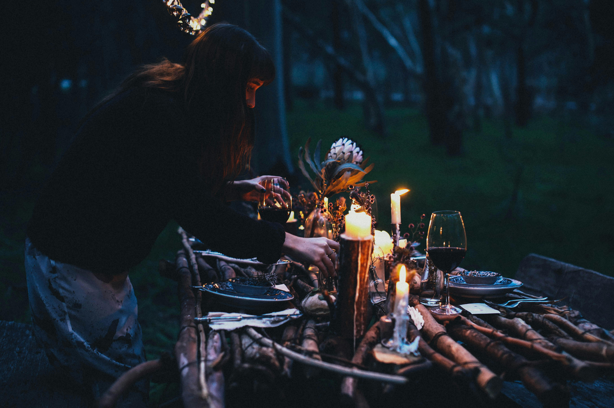
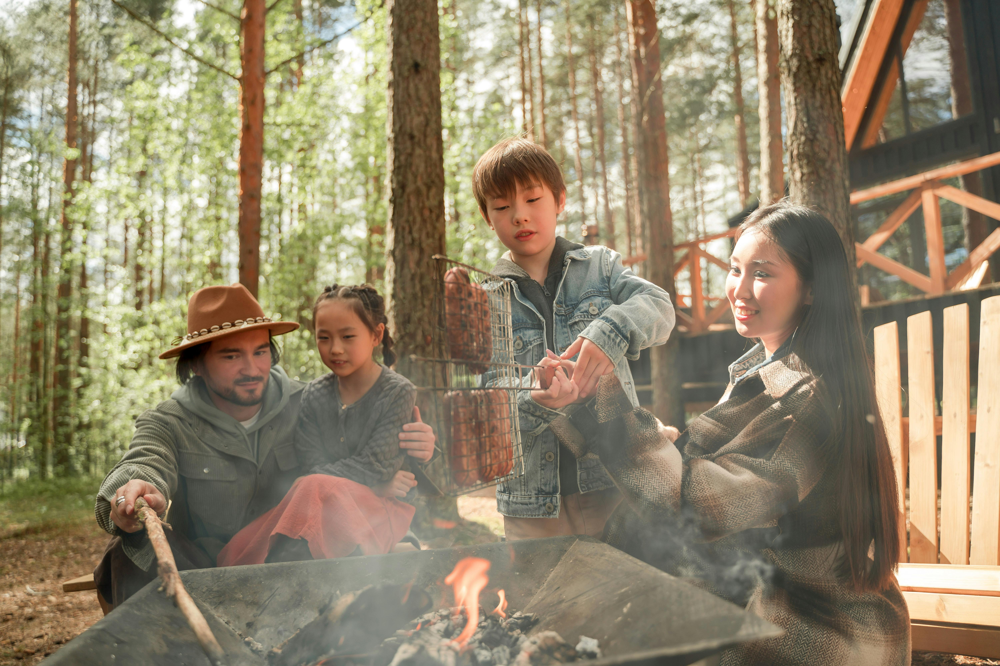

Our Mission
Pacific Trails Resort offers the premiere serene, eco-friendly retreat where guests can connect with the beauty of the California North Coast through exceptional service and unforgettable experiences.
Our Dedicated Staff
At Pacific Trails Resort, our dedicated staff is committed to ensuring an unforgettable stay. With a wealth of knowledge about the beautiful California North Coast, they are always ready to offer insights and recommendations to make your yurt lodging experience truly special. Our team prides itself on providing warm hospitality and is passionate about creating the best possible experience for each guest. If you have any questions or need assistance during your stay, don't hesitate to reach out – we're here to help!
The Owners: The Cruz Family
The Cruz Family, owners of Pacific Trails Resort, are long time residents of Northern California. They have a deep love for the California North Coast and a passion for sharing its beauty with others. Their vision for the resort was to create a peaceful, immersive experience where guests can enjoy the natural surroundings in comfort. With a strong commitment to sustainability and community, the Cruz family ensures that every aspect of the resort reflects their dedication to preserving the environment while providing exceptional service. They take pride in welcoming guests as if they were family, making Pacific Trails Resort a true home away from home. .